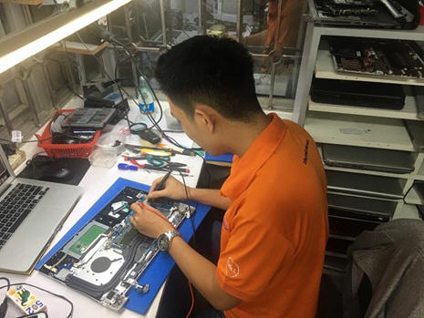
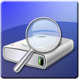
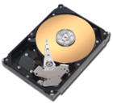
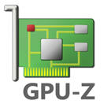

a) Nhận diện sự cố
Tiếp nhận thông tin do người sử dụng cung cấp: Để tiếp cận dễ dàng và nhanh chóng tìm ra nguyên nhân với độ chính xác cao, việc tiếp nhận thông tin do người sử dụng cung cấp là một nội dung quan trọng. Muốn thông tin tiếp nhận được đầy đủ, nhân viên kỹ thuật cần đặt ra các câu hỏi để nắm bắt được hiện tượng của PAN bệnh như: Máy tính có hiện tượng gì, như thế nào? Trước khi xảy ra sự cố có hiện tượng gì xảy ra (va đập, chạm chập, tiếng nổ, mùi khét...)? Máy có thường xuyên xảy ra tình trạng thế không? Máy có cài đặt phần mềm nào mới không... Ghi chép lại thông tin cung cấp của người sử dụng máy tính.
b) Kiểm tra máy
Kiểm tra tổng quát máy tính: Dựa vào thông tin người sử dụng cung cấp kiểm tra xác nhận lại hiện tượng, kiểm tra chính xác thông tin cấu hình máy trước khi nhận bàn giao máy. Để kiểm tra đầy đủ và chính xác hiện tượng, cũng như thông tin cấu hình máy nhân viên kỹ thuật nên thực hiện như sau
Kiểm tra tình trạng phần cứng: Cần mở máy tính kiểm tra các linh kiện như RAM, CPU, bo mạch chính (mainboard), ổ cứng, màn hình, bộ nguồn xem có đầy đủ không, hay có chập cháy chỗ nào không. Lưu ý với hiện tượng người sử dụng báo có chạm chập, tiếng nổ, mùi khét và máy tính không lên nguồn. Khi kiểm tra cấp nguồn cần phải cấp điện qua bộ chống chập để tránh hỏng hóc nặng hơn cho máy tính. Nguyên nhân là khi có hiện tượng cháy nổ chạm chập ở máy tính, sẽ có một hay nhiều linh kiện của mạch bảo vệ đã bị cháy hỏng, làm mạch bảo vệ một tầng mạch nào đó sẽ không hoạt động, nếu tiếp tục cấp nguồn cho máy tính có thể dẫn đến hỏng nặng hơn ở các tầng sau của máy tính. Nếu các yếu tố phần cứng không có vấn đề, khởi động máy tính để kiểm tra và xác thực các lỗi phần mềm mà người sử dụng cung cấp.
Tình trạng phần mềm: Như hệ điều hành, phần mềm ứng ứng (có bản quyền hay không), các driver phần cứng, vị trí lưu trữ các dữ liệu người dùng...
c) Xác định lỗi
Sau khi kiểm tra sơ bộ về tình trạng máy tính và so sánh với thông tin về lỗi người sử dụng cung cấp, cần khoanh vùng và có thể sử dụng thêm các công cụ cần thiết để xác định nguyên nhân gây ra lỗi để đề ra biện pháp khắc phục. Đây là bước quan trọng liên quan trực tiếp đến thời gian khắc phục sự cố máy tính và khả năng khắc phục thành công máy tính. Đây cũng là một trong những nội dung để đánh giá tay nghề của người thợ cũng như chất lượng hoàn thành nhiệm vụ.
Ở bước này người thợ có thể dựa vào kinh nghiệm sửa chữa với những người thợ lành nghề đã có kinh nghiệm sửa chữa lâu năm, khi xác nhận đúng hiện tượng trong các PAN bệnh thường gặp có thể đưa ra được kết luận về nguyên nhân hỏng hóc và vị trí cần khắc phục. Tuy nhiên nếu còn chưa chắc chắn hoặc với những lỗi phần mềm ít gặp nên sử dụng các công cụ hoặc phần mềm kiểm tra máy tính sẵn có trong windows hoặc phần mềm chuyên dụng ví dụ như sử dụng các phầm mềm kiểm tra sẵn có của window như Task manager, Device manager. Hay sử dụng các công cụ kiểm tra như
* Kiểm tra thông số máy tính: Hwmonitor, CPUZ, Aida64
* Kiểm tra hoạt động CPU: CPU stress test
* Kiểm tra ổ cứng máy tính: Crystal diskinfo, HDD tune
 * Kiểm tra card màn hình: GPUZ, MSI after bunner, Furmark....
